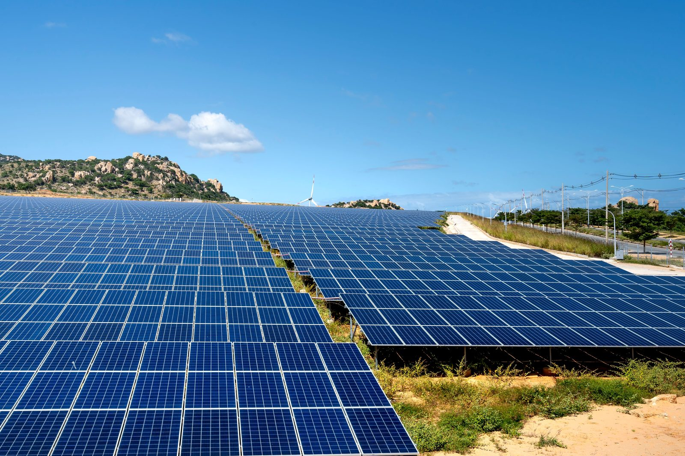
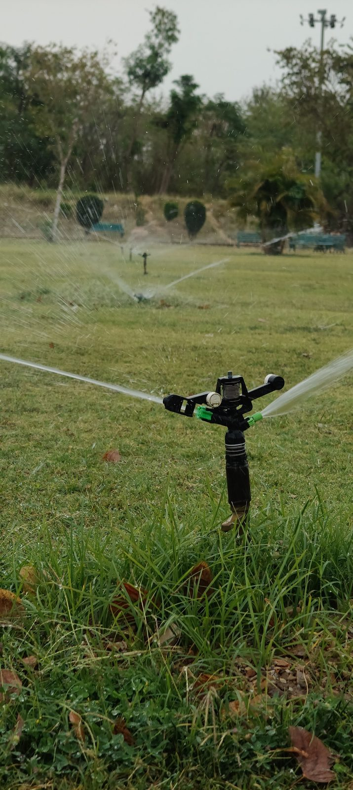

Agua que llega. Sol que alimenta.
Aqua Solaris es una asociación civil sin fines de lucro que implementa proyectos de agua sostenible, saneamiento y energía solar en comunidades rurales y campesinas del Perú.
Una asociación civil constituida para gestionar el agua y llevar energía limpia al campo
Aqua Solaris fue fundada el 20 de enero de 2025 en Lima, Perú, e inscrita en la Superintendencia Nacional de los Registros Públicos (SUNARP) como asociación civil sin fines de lucro, en la modalidad de Organismo No Gubernamental (ONG). Nuestros servicios de ayuda son gratuitos, con especial atención a mujeres, niñas, niños y personas en situación de vulnerabilidad.
- Fundación20 de enero de 2025, Lima – Perú
- Registro públicoSUNARP · Partida N.º 15856006
- DomicilioDistrito de Los Olivos, Lima
- DuraciónIndefinida
- PresidenciaJavier Eduardo Flores Velásquez
Nuestros fines
Uso sostenible del agua
Implementar y gestionar proyectos para la distribución equitativa del agua potable y sistemas de riego eficientes.
Calidad del agua
Desarrollar programas de purificación y conservación del agua en comunidades necesitadas.
Energía solar
Implementar sistemas de energía solar en comunidades rurales para reducir la dependencia de fuentes no renovables.
Educación y sensibilización
Talleres y capacitaciones sobre el uso eficiente del agua y la energía solar.
Innovación y tecnología
Fomentar la investigación y el desarrollo de tecnologías innovadoras en agua y energía solar.
Infraestructura de riego
Obras que mejoren el riego de los campos de cultivo y la alimentación de las comunidades campesinas.
Así se ve el agua y el sol trabajando juntos

Energía solar
Agricultura andinaDel acceso al agua a la energía que sostiene a una comunidad
Impulsamos el acceso universal y equitativo al agua potable, el saneamiento, la protección de ecosistemas hídricos y la cooperación con comunidades locales, según lo establecido en nuestro estatuto fundacional.
Agua potable para todos
Trabajamos por el acceso universal y equitativo al agua potable, priorizando a las comunidades más vulnerables.
Saneamiento e higiene
Impulsamos el acceso a servicios de saneamiento adecuados y estrategias para poner fin a la defecación al aire libre.
Reducción de la contaminación
Buscamos reducir a la mitad el porcentaje de aguas residuales sin tratar y aumentar el reciclado y la reutilización segura del agua.
Uso eficiente del agua
Promovemos el uso eficiente de los recursos hídricos en todos los sectores y una gestión integrada, incluso mediante cooperación transfronteriza.
Protección de ecosistemas
Protegemos y restablecemos los ecosistemas relacionados con el agua: bosques, montañas, humedales, ríos, acuíferos y lagos.
Cooperación y alianzas
Ampliamos la cooperación internacional y fortalecemos la participación de las comunidades locales en la gestión del agua.
Cómo puedes ayudar
Donaciones
Tu aporte financia directamente los proyectos de agua y energía solar de la asociación.
Voluntariado
Súmate con tu tiempo y habilidades a la implementación de proyectos y campañas.
Difusión
Comparte nuestro trabajo en redes sociales para ampliar el alcance de cada campaña.
Alianzas estratégicas
Representas una empresa, gobierno u otra ONG? Conversemos sobre cómo colaborar.
Así se destinan los fondos, según nuestro propio estatuto
El Artículo Sexto de nuestros estatutos establece que el patrimonio de Aqua Solaris es irrepartible: ningún asociado ni dirigente puede beneficiarse directa ni indirectamente de él. El Artículo Quinto define además cómo se distribuyen los saldos anuales que forman el fondo de reserva:
25%
Capacitaciones organizadas por la asociación.
25%
Publicaciones que difunden el trabajo de la asociación.
25%
Identificación, formulación y evaluación social de proyectos de saneamiento.
25%
Talleres de higiene y salud diseñados a medida para las comunidades.
Fuente: Estatuto de Aqua Solaris, inscrito en SUNARP, Partida N.º 15856006.
Consejo Directivo (2025–2029)
Las decisiones no dependen de una sola persona: el estatuto exige un consejo de tres miembros, elegido en la Asamblea General de fundación.
Presidente
Javier Eduardo Flores Velásquez
Secretaria de Actas
Margarita Isabel Flores Velásquez
Secretaria de Economía
Angela Verónica Flores Velásquez
Cómo donar
Todo aporte se destina íntegramente a los fines de la asociación: el patrimonio de Aqua Solaris es irrepartible y no puede beneficiar directa ni indirectamente a sus asociados.
Yape / Plin
Transferencia inmediata desde cualquier billetera móvil peruana. Sin comisión para quien dona.
Número pendiente de confirmar
Titular: Javier Eduardo Flores Velásquez (representante legal)
Transferencia bancaria
Para donaciones nacionales o internacionales mediante cuenta a nombre de Aqua Solaris.
Datos de cuenta a confirmar por la asociación
PayPal
Ideal para donantes internacionales. PayPal cobra una pequeña comisión por transacción, no por uso del servicio.
En trámite — disponible próximamente
PróximamenteCuenta a nombre de Aqua Solaris.
Contacto
Si representas una fuente donante, una institución cooperante o una comunidad interesada en un proyecto, escríbenos. Respondemos personalmente cada mensaje.
- Correoinfo@aquasolaris.org
- TeléfonoPendiente de confirmar
- UbicaciónLos Olivos, Lima, Perú
Nuestras redes sociales
Aquí compartimos avances de proyectos, testimonios de comunidades e historias de donantes. Son también nuestro principal canal para captar fondos.
Enlaces a completar con tus cuentas reales.